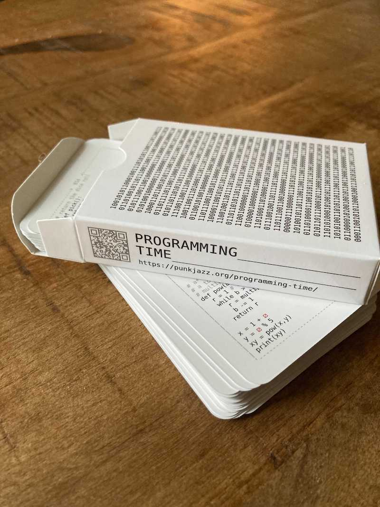
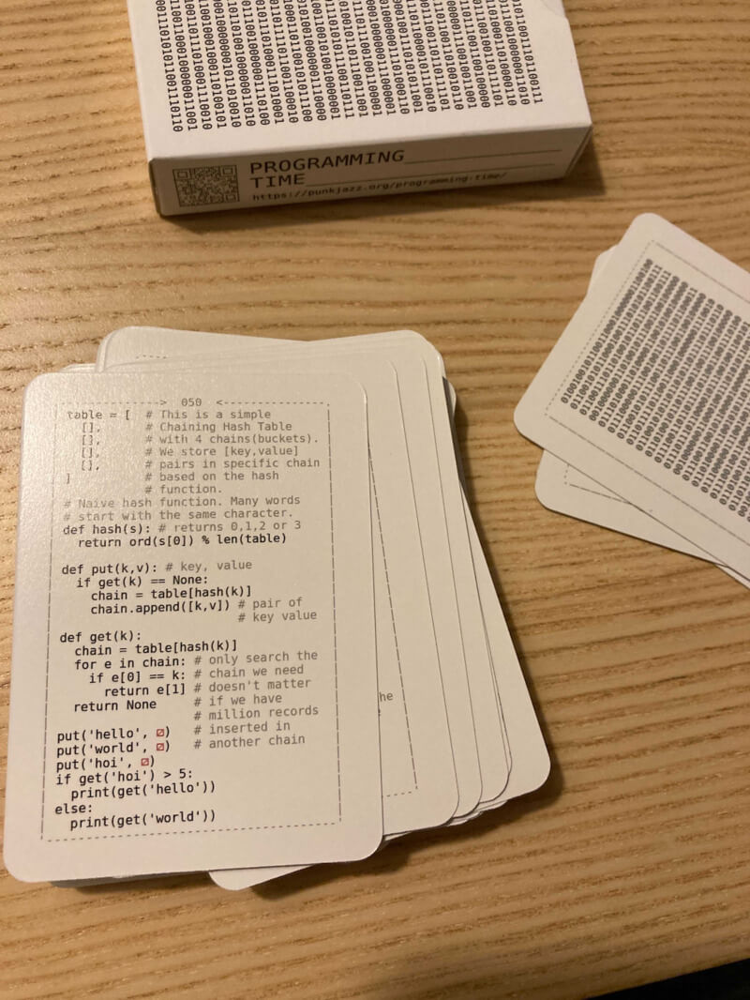
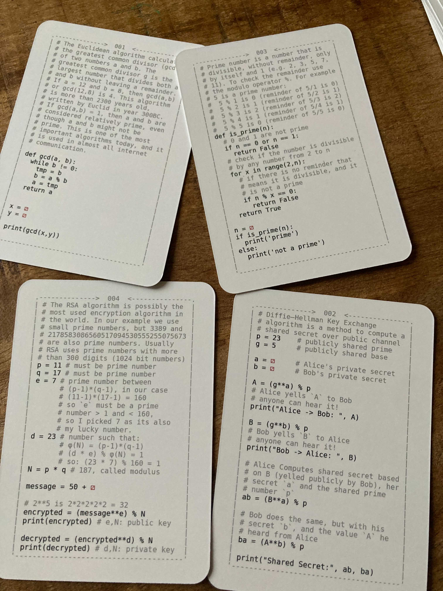

⚂ programming time ⚂



I made this game so I can improve my daughter's ability to read and debug code. Each card has something interesting to teach. The game is simple, pick a card, read the code, throw a 20 sided dice (wherever you see the ⚂ symbol) to get a value and evaluate the code together with your kid.
Buy now: €5,00 EUR
Also you can check out other games that we made:
- 4917, a game to teach kids machine code and how the cpu works with memory and registers
- programming for kids, a log of my journey of teaching my daughter how to code
- The Unix Pipes Game, a game to teach kids to use basic UNIX commands:
- The C Pointer Game - Pointers, Arrays and Strings, a game to teach kids to look at the computer memory and understand references and values
- PUNK0 - The Function Composition Card Game, use cards to manipulate a list and use its values to win the game
- RunLength Encoding for Kids, use cards "game" to explain runlength encoding
Example cards:

As you can see they cover all kinds of topics, some are more advanced, some are quite trivial, but the key is you take a dice and pen and paper and follow the code together.
PS: the back and front of the cover is an ascii string.

{kind=link}